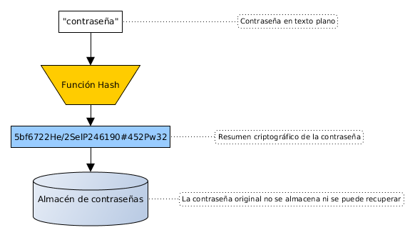

Introducción al cifrado, esteganografía y algoritmos resumen
Mikel Egaña Aranguren
Introducción al cifrado, esteganografía y algoritmos resumen
- Introducción al cifrado
- Esteganografía
- Algoritmos resumen
Introducción al cifrado
Criptografía: cifrar la información
Mecanismo de seguridad muy antiguo
Asegura: Confidencialidad, Integridad, Autenticidad, (No repudio)
Introducción al cifrado
Criptoanálisis: técnicas para descifrar mensajes encriptados
Criptología: Criptografía + Criptoanálisis
Introducción al cifrado
Criptoanálisis:
Principios Kerckhoffs
- Si el sistema no es teóricamente irrompible, al menos debe serlo en la práctica
- La efectividad del sistema no debe depender de que su diseño permanezca en secreto
- La clave debe ser fácilmente memorizable de manera que no haya que recurrir a notas escritas
Principios Kerckhoffs
- Los criptogramas deberán dar resultados alfanuméricos
- El sistema debe ser operable por una única persona
- El sistema debe ser fácil de utilizar
Criptosistema
Criptosistema: DK ( EK ( M ) ) = M
- M: Conjunto de todos los mensajes sin cifrar
- C: Conjunto de todos los mensajes encriptados (criptogramas)
- K: Conjunto de claves posibles
- E: Algoritmo de encriptación
- D: Algoritmo de desencriptación
Criptosistemas
Simétricos o de clave privada: Una clave para encriptar y desencriptar
Asimétricos o de clave pública: Una clave para encriptar y otra para desencriptar (Lo que una encripta, la otra lo desencripta)
Introducción al cifrado
Criptografía: cifrar la información
Esteganografía: ocultar la información
Algoritmos hash: resumir la información
Esteganografía
"steganos": oculto; "graphos": escritura
Ocultar información de forma que no sea “visible” para quien no sepa la clave
Sin saber la clave, puede parecer que no hay información oculta
Es la técnica precursora de la criptografía
Esteganografía (historia)
Histaiaeo (gobernador de Mileto) buscaba aliados para sublevarse contra el rey persa Dario I (V a.c.)
Necesitaba enviar mensajes que nadie detectara
- Rapaba el pelo a los mensajeros
- Les grababa el mensaje en la cabeza
- Esperaba a que les creciera el pelo, y los mandaba al destino
- En el destino les volvían a rapar la cabeza y leían el mensaje
Esteganografía (historia)
Segunda Guerra Mundial
Los alemanes utilizaban micro puntos para ocultar información en textos, haciéndolos pasar por signos de puntuación
Esteganografía moderna
Insertar información sensible dentro del fichero contenedor
- Sustitución de bits
- Inserción de bits al final, después de la marca EOF (End Of File)
- Creación fichero contenedor "ad-hoc" partiendo de información a ocultar
Sustitución de bits
Ocultación de información en archivos multimedia (normalmente imágenes)
En formato BMP cada pixel en RGB son 3 bytes
LSB (Less Significant Bit): Modificar el último bit de cada byte es inapreciable
Sustitución de bits
Por ejemplo, para ocultar texto, insertamos el código ASCII del carácter deseado

Esteganografía moderna
- Normalmente mediante programas que usan contraseñas
- ¿Cómo mejorar la robustez del sistema?
- Cifrar la información antes de introducirla (Criptografía + esteganografía)
Esteganografía moderna: problemas
- Si el fichero contenedor es manipulado se puede perder la información (ej. JPEG --> BMP --> JPEG)
- No garantiza Autenticidad ni Integridad (Pero si Confidencialidad)
Algoritmos resumen
Generan un criptograma que representa el contenido original:
- De tamaño constante, independientemente del contenido original
- Representa todo el contenido original
- Si el contenido cambia lo más minimo cambia completamente
- Para el mismo contenido, siempre genera el mismo
Funciones hash
- No tienen inversa (one-way function): no se puede obtener el contenido desde el criptograma
- No se puede descifrar, ya que no cifra (resume)
Funciones de los algoritmos resumen
Certificar la integridad de la información
Almacenar contraseñas
Identificador de datos o archivos
Prueba de trabajo en Bitcoin
Integridad en firma digital
Certificar la integridad de la información

Almacenar contraseñas

Almacenar contraseñas: identificación

Almacenar contraseñas: problemas
Todo el mundo con la misma contraseña tiene el mismo hash
Se pueden precalcular los hashes de todo el espacio de contraseñas
Almacenar contraseñas: problemas
Solución: usar "sal" (Salt), o semilla

Almacenar contraseñas: problemas
Identificación con sal

Almacenar contraseñas: problemas
Ventajas del uso de sal:
- La misma clave tiene una codificación distinta cada vez
- Dificulta los ataques por fuerza bruta
Almacenar contraseñas: implementación
Linux:
- Ubicación: /etc/shadow
- Obtención: sudo cat /etc/shadow
- Formato: user:$Algoritmousado$sal$ResumenCriptográfico:A:B:C:D:E:F:
Almacenar contraseñas: implementación
Formato Linux:
- Algoritmousado: 1: MD5; 2: Blowfish; 3: NT; 5: SHA-256; 6: SHA-512
- Sal: cadena aleatoria para derivar las claves
Almacenar contraseñas: implementación
Formato Linux:
- A: número de días sin cambiar la clave (desde 01/01/1970)
- B: número de días hasta poder cambiar la clave
- C: número máximo de días que se puede estar sin cambiar la clave
Almacenar contraseñas: implementación
Formato Linux:
- D: número de días de antelación con el que hay que avisar al usuario de que tiene que cambiar la clave
- E: número de días desde que caduque la contraseña hasta que se desactive la cuenta
- F: número de días hasta que la cuenta se desactive (desde 01/01/1970)
Identificador de datos o archivos
Sistema de control de versiones Git para identificar:
- Commits
- Blobs (Binary Large Objects)
- Arboles: directorios que referencian a blobs y otros directorios
Identificador de datos o archivos
Sistema de control de versiones Git para:
- De-duplicación de contenido
- Detección de cambios
- Integridad frente a cambios maliciosos
Identificador de datos o archivos
En BitTorrent para identificar:
- Fragmentos de archivos
- Archivos .bittorrent
- Magnet links
Identificador de datos o archivos
En estructuras de datos de lenguajes de programación para:
- Búsqueda rápida
- Verificación de integridad
- Control de unicidad
Identificador de datos o archivos
En estructuras de datos de lenguajes de programación:
- Python: Dicts, Sets
- Java: HashMap, HashSet
- JavaScript: Object, Map
Algoritmos resumen más conocidos
MD5
SHA-3
RIPEMD
MD5
Criptográficamente roto pero todavía en uso, sobretodo para integridad y en sistemas heredados no-críticos
Hashes de 128 bits
SHA-3
SHA-3 (Secure Hash Algorithm 3) desarrollado por NIST (National Institute for Standards and Technology)
SHA-0..2 estaban basados en MD5 (roto), SHA-3 es una estructura diferente
Firmas digitales: DSA (Digital Signature Algorithm) y ECDSA (Elliptic Curve Digital Signature Algorithm)
Certificados SSL/TLS: Open SSL
Criptomonedas: Ethereum
RIPEMD
RIPEMD (RACE Integrity Primitives Evaluation Message Digest): alternativa a SHA y MD5
Muy seguro
Se usa, en combinación con SHA-256, para crear direcciones Bitcoin a partir de claves públicas
Ataques a algoritmos resumen
- Colisiones: dos connjuntos de datos diferentes generan el mismo resumen
- Mediante fuerza bruta (ej. paradoja del cumpleaños) o técnicas mas refinadas como shattered contra SHA1
- Integridad: sustituir un documento por otro documento malicioso con el mismo hash
- Certificados TLS/SSL: suplantar identidad de un servicio creando un certificado falso